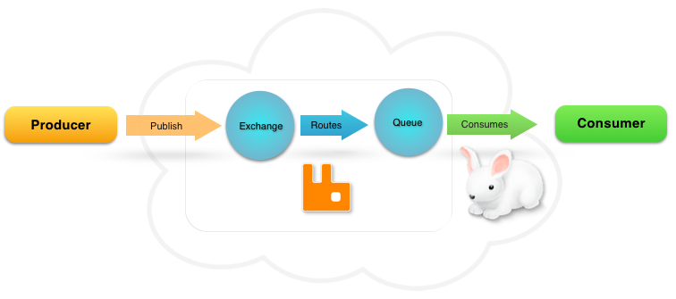

Task queues uncut
Малышев Артём



Celery
app = Celery(__name__)
@app.task
def add(x, y):
return x + y
add.delay(1, 2)RQ
def add(x, y):
return x + y
queue = rq.Queue('default')
queue.enqueue(add, 1, 2)RabbitMQ queues
| Name | Ready | Unacked | Total |
| celery | 1 | 0 | 1 |
Payload
{
"task": "app.add",
"args": [1, 2],
"kwargs": {},
"id": "27ebcaee-444f-4379-a438-04c3b5bb0fc3",
"callbacks": null,
"errbacks": null,
"eta": null,
"expires": null,
"timelimit": [null, null],
"taskset": null,
"chord": null,
"retries": 0
}Redis queues
RQ
>>> SMEMBERS rq:queues
1) "rq:queue:default"
>>> LRANGE rq:queue:default 0 -1
1) "be58515f-9f330470995d"
>>> HGETALL rq:job:be58515f-9f330470995d
1) "status" "queued"
2) "enqueued_at" "2016-06-14T19:45:39Z"
3) "created_at" "2016-06-14T19:45:39Z"
4) "origin" "default"
5) "description" "lib.add(1, 2)"
6) "data" "\x80\x04\x95\x17\x00\x00..."
7) "timeout" "180"Accept task
# celery
$ celery -A myapp worker -Q queue1,queue2
# rq
$ rq worker queue1 queue2RabbitMQ queues
| Name | Ready | Unacked | Total |
| celery | 0 | 1 | 1 |
Redis queues
>>> KEYS *
1) "celery"
2) "unacked"
3) "unacked_index"
4) "unacked_mutex"
>>> HGETALL unacked
1) "13ce9ff2-c596-4471"
"[{...}, \"celery\", \"celery\"]"RQ
>>> HGETALL rq:job:be58515f-9f330470995d
1) "status" "started"
2) "enqueued_at" "2016-06-14T19:45:39Z"
3) "created_at" "2016-06-14T19:45:39Z"
4) "origin" "default"
5) "description" "lib.add(1, 2)"
6) "data" "\x80\x04\x95\x17\x00..."
7) "timeout" "180"
8) "started_at" "2016-06-14T21:21:14Z"
>>> ZRANGE rq:wip:default 0 -1 WITHSCORES
1) "be58515f-9f330470995d" "1465939514"Fragile acknowledgment
rpoplpush
Task execution
# celery
def trace_task(uuid, args, kwargs, request=None):
R = retval = fun(*args, **kwargs)
# rq
class Job:
def perform(self):
self._result = self.func(
*self.args, **self.kwargs)concurrency
-
✓ gevent
✗ twisted
✗ tornado
✗ asyncio
Callback
app.add.apply_async((1, 2), link=app.mul.s(3))Payload
"callbacks": [
{
"task": "app.mul",
"args": [3],
"kwargs": {},
"options": {},
"chord_size": null,
"immutable": false,
"subtask_type": null
}
]Chains
c = chain(app.add.s(1, 2),
app.add.s(3),
app.mul.s(6))
c()RQ Dependents
job = q.enqueue(lib.add, 1, 2)
delayed = q.enqueue(lib.add, 1, 2, depends_on=job)Redis
>>> SMEMBERS rq:job:1183256d-2cf952c76:dependents
1) "00b70a47-bba9051bd7da"
>>> HGETALL rq:job:00b70a47-bba9051bd7da
1) "status" "deferred"
2) "dependency_id" "1183256d-2cf952c76"Groups
g = group(app.add.s(1, 2), app.mul.s(3, 4))
g()Chord
ch = chord([app.add.s(1, 2), app.add.s(3, 4)])
ch(app.mul.s(5))Payload
"chord": {
"task": "app.mul",
"chord_size": 3,
"args": [7],
"kwargs": null,
"options": {
"task_id": "2f0f2a7f-e249828b3fc9",
"reply_to": "a53cb689-85a86c447428"
}
}Celery: Redis as a broker deprecated in 4.0
Ask Solem (@asksol) June 28, 2016
So I’m late for work, and seems like Redis as a broker is no longer deprecated :)
Ask Solem (@asksol) June 28, 2016